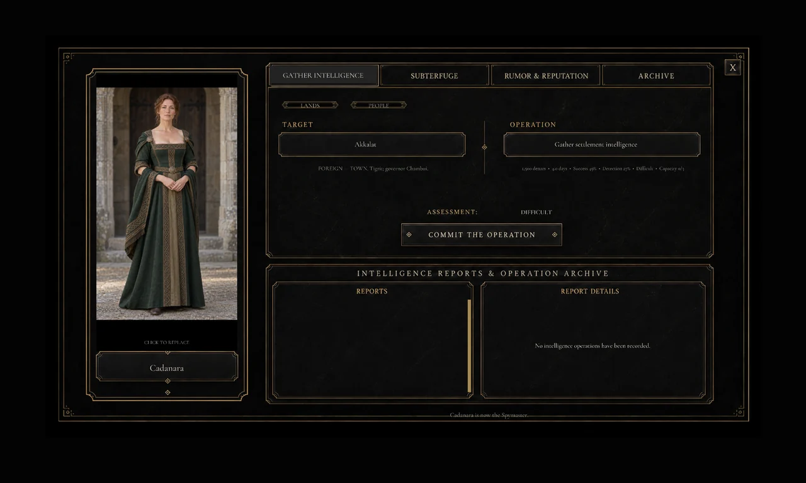

Mount & Blade II: Bannerlord · Reign
Spymaster and covert work
Appoint a Spymaster, assess an operation, and follow its reports.
Development guide · November 24, 2026 · Edition notes
Appointing and using a Spymaster
#Appoint an eligible Spymaster, then use Court's Spymaster tab. Roguery matters, alongside the person's overall fitness for office. There are limited concurrent missions, and an officeholder with active work cannot simply be replaced to erase its consequences.
Choose the mission, actual target, and shown terms. Read cost, duration, difficulty, and risk of detection before starting. A routine mission and an assassination are very different commitments. An unavailable target can invalidate work, and spent money is not automatically refunded.

Intelligence and sabotage
#Intelligence work can investigate land, skills, relationships, rumors, and reputations. Counterintelligence searches for foreign agents. Sabotage can disrupt food contribution, construction, security, or loyalty for a period of time.
Better expertise helps but does not guarantee success or secrecy. Important and well-protected targets are harder. Read the returned report: an attempt is not a successful disruption, and detecting activity is not always identifying its sponsor.
For timed settlement sabotage, a successful report requires the effect to be observed in the game. Check the target and report details before paying for a second attempt. Social mitigation also keeps a recorded result, so a delayed report can recover after a retry or reload of the matching save.
NPC kingdoms can also disrupt food production in villages supplying an enemy town during wartime. This activity uses the NPC kingdom and runs alongside the Spymaster missions you choose. Its disruption wears off and food relief continues. Use Court's Economic Report to check food supplies when planning for a siege or shortage.
Social manipulation and lethal missions
#Supported social work can mitigate your own or another person's damaging signal, promote a positive reputation, or fabricate harmful allegations. An allegation can affect society without making it objectively true. Established reputations are harder to erase than rumors.
Assassination can kill a unique person and expose or capture your Spymaster. A captured operative can require ransom or a personal breakout attempt; rescue can fail and place you in custody too. Read those consequences before confirming. Counterintelligence and ordinary information work are available without choosing a lethal mission.
Foreign realms can recruit disaffected agents and operate against you. A friendly-looking court is not proof that every member is loyal. Exposed agents leave the active hidden pool while their history remains.